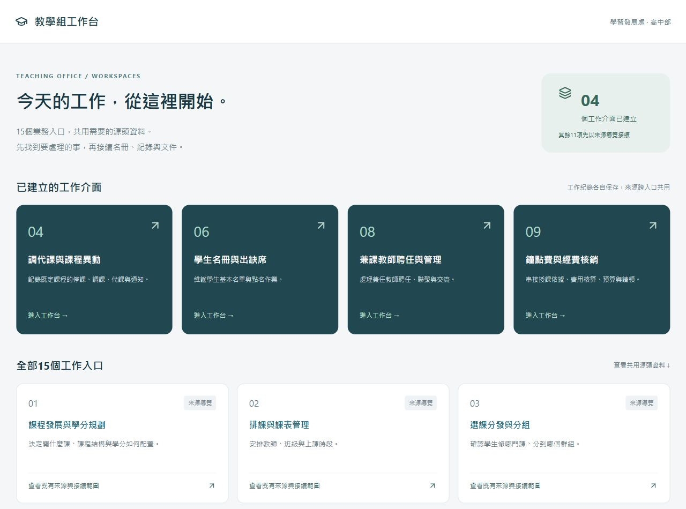

15個總入口、共用源頭資料與備份
從同一個首頁選擇業務，進入四個常用工作介面，或查找課表、名冊等共用源頭資料。程式與工作資料分開備份，供交接與還原。
把課表、名冊、教師聘任與鐘點費接成可回查的教務流程。

從同一個首頁選擇業務，進入四個常用工作介面，或查找課表、名冊等共用源頭資料。程式與工作資料分開備份，供交接與還原。
用課程、學分、班級和師資的同一套核對依據，維護課表、學分總表與閱讀網頁。
讓學生從入班、選課及分組到班級名冊和點名有可追查的依據。
先用實際課表核對受影響的課次、教師及班級，再把處理結果和通知紀錄留在案件。
讓教師填報的活動資料進到教學組收件，接續核對、補件、課務與通知。
把應開課程、學分、教師及學生名單與評量系統互相核對，再比較不同年度的開課。
釐清抽離課程與原課名冊的關係，保留個案核對位置，供後續決定如何開課及回饋。
沿用已核對的教師身分、聯絡與授課資料，集中追蹤聘期、核准依據及應備文件。
依實授與費率產出授課明細、簽領表、清冊和簽辦資料，涵蓋兼課基本費、差額、回兼及公費代課。
把年度資格、季月分配、費率及例外規則整理成可追查的來源，釐清草案與核定版差異。
讓簽核文件、紙本掃描、雲端歸檔及平台狀態能相互對照，並分月追蹤缺件。
把課務登錄、實授與給付核定分階段處理，並用實際授課日及歷史紀錄支援月結與預估。
依原有文件格式建立本學期教練費簽辦文件，保持期別和歸檔位置一致。
辨識舊資料夾用途、應維護的原件和索引，再整理每日收工與下次開工的接續點。
把公文及 PDF 附件中的研習資訊，整理成教師在 LINE 上就能快速讀懂、判斷是否參加的推播訊息。
把錄音、討論與更正整理為可傳閱的會議紀錄，便於後續找回決議。
從教師觀察、學生資料和各校要求整理推薦信，保留可依不同申請調整的寫法。
工作台先保留來源與版本，核對後分流到各業務入口，再依紀錄核定、產出及歸檔。點選概念圖可展開各階段的技術細節。
點選步驟，查看三案的實際做法。
01
記錄案件範圍、來源與版本，保留可回查的原件。
02
對照原始資料與實際作業所用資料，把差異列為待確認。
03
逐筆寫出擬處理內容、依據與待確認事項。
04
依確認的範圍更新資料或傳送通知，留下操作結果。
05
回到作業入口比對結果，再整理可供審閱的版本。